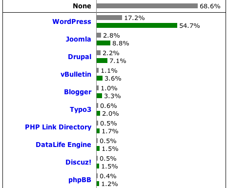
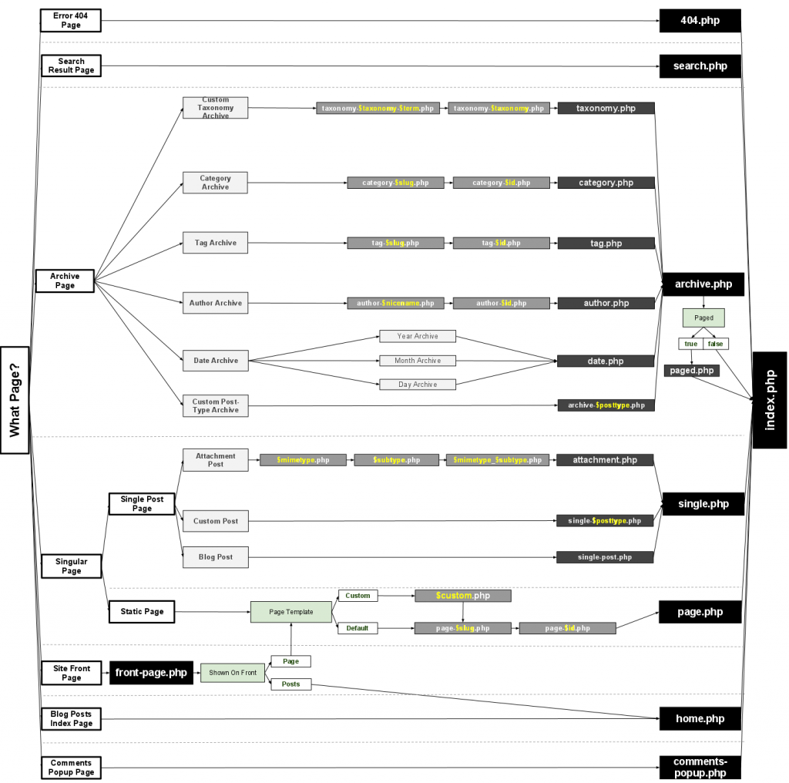

WordPress SIG
Introduction
- Created as a blogging Platform
- Evolved into a full CMS
- Powers 17.2% of the web (54.8% of CMS Market Share)
CMS Market Share

Language Market Share

Benefits
- Low Learning Curve
- User Friendly Backend interface
- Flexible
- Well Document API
- Large Community
Data Model
{kind=link}
Themes and Plugins
- Themes are primarily used for Styling
- Plugins are for extending functionality
- Advanced Themes can add Functionality as well
Theme Structure
- A theme may have at minimum
- style.css
- index.php
- Some post types allow manual theme selection
- WordPress will try to select the theme using its hierarchy
Post Types
- Defaulted with 5:
- Post
- Page
- Attachment
- Revisions
- Nav Menus
- Can Create your own Post Types
Template Hierarchy

Page Structure
- Header
- Footer
- Sidebar(s)
- Custom Template Parts
Headers & Footers
- Used for the Common Top & Bottom HTML
- wp_head()
- wp_foot();
- Can have multiple headers and footers per scenario
- get_header() calls header.php
- get_header(‘test’) calls header-test.php
Sidebars
- Includes calls for 1 or more Registered Sidebars
- Sidebars can be registered using functions.php
- Registered Sidebars contain widgets defined in the admin panel
Custom
- Any Custom HTML
- Not very common
- get_custom_part(‘social’, ‘twitterFeed’) grabs social-twitterFeed.php
The Loop
- Executes for each Post
- Loop is same for single and multiple Post page
//Loop
<?php if (have_posts()) : ?>
<?php while (have_posts()) : the_post(); ?>
<!-- do stuff ... -->
<?php endwhile; ?>
<?php endif; ?>
Expanding Themes
- Post Meta
- Post Types
- All done in functions.php
Functions.php
- Theme Functions File
- Registers theme support
- Hooking
- Can also create functions to be accessed in theme files